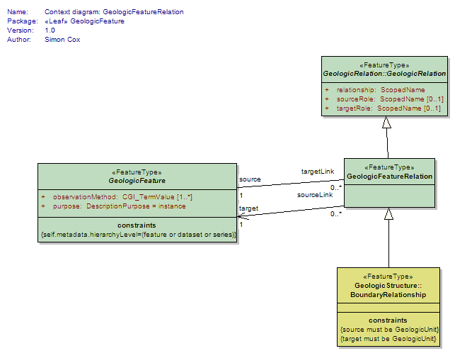
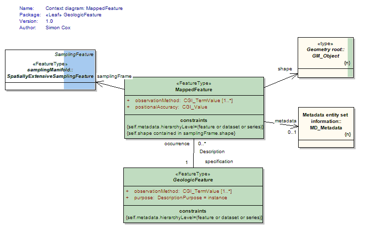
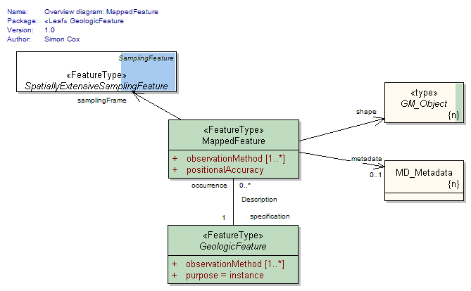
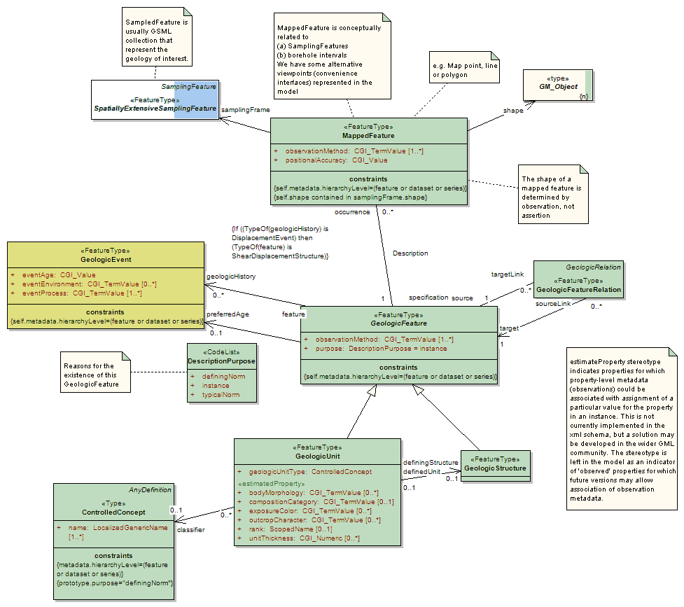

Package GeoSciML/GeologicFeature
The GeoSciML GeologicFeature package contains the root Feature classes MappedFeature and GeologicFeature.
GeologicFeature represents a conceptual feature that is hypothesized to exist coherently in the world. Specializated geologic features are contained in other packages.
Class Summary |
|
| <<FeatureType>> Classes | |
GeologicFeature
<<FeatureType>>
|
The abstract GeologicFeature class represents a conceptual feature that is hypothesized to exist coherently in the world. * this corresponds with a "legend item" from a traditional geologic map * while the bounding coordinates of a Geologic Feature may be described, its shape is not. The implemented Geologic Feature instance acts as the "description package" * the description package is classified according to its purpose as an Instance, TypicalNorm, or DefiningNorm. |
GeologicFeatureRelation
<<FeatureType>>
|
The GeologicFeatureRelation class is a concrete subtype of the abstract GeologicRelation class that is used to define relationships between geologic features, ie. structure-structure, unit-unit, and structure-unit relationships. Relationships are always binary and directional. There is always a single source and a single target. The relationship is always defined from the perspective of the Source and is generally an active verb. Example: a Source may point to an intrusive igneous rock body. In this case, the Target would point to the appropriate host rock body and the relationship attribute would be 'intrudes'. Other appropriate relationship attributes might include: overlies, offsets, crosscuts, folds, etc. Two or more GeologicFeatures are associated in a GeologicFeatureRelation; each has a role in the relationship. Examples of geological roles include "overlies", "is overlain by", "is younger", "is older", "intrudes", "is intruded by", and so forth. In a relationship where an igneous unit intrudes a sedimentary unit, the geological relationship is "intrudes", the intruded sedimentary unit has the role "host", and the igneous unit has the role "intrusion". |
MappedFeature
<<FeatureType>>
|
A MappedFeature provides a link between a notional feature (description package) and one spatial representation of it, or part of it. (Exposures, Surface Traces and Intercepts, etc) * the specific bounded occurrence, such as an outcrop or map polygon * the Mapped Feature carries a geometry or shape o the association with a Geologic Feature (legend item) provides specification of all the other descriptors o the association with a Sampling Feature provides the context and dimensionality A Mapped Feature is always associated with some sampling feature - e.g. a mapping surface, a section, a Borehole (see BoreHolesAndObservation) etc. As noted on the diagram, if the associated sampling feature is a Borehole, then the shape associated with the MappedFeature will usually be either a point or an interval. This reconciles the 2-D ("map", section) and 1-D (borehole, traverse) viewpoints in a common abstraction. |
| <<CodeList>> Classes | |
DescriptionPurpose
<<CodeList>>
|
Codes used for the specification of the intended purpose/level of abstraction for a given feature or object instance, ie the reason for the existence of the GeologicFeature. Values: Instance, TypicalNorm, IdentifyingNorm. |
Tagged Values |
||
| Tag | Value | Notes |
| xsdDocument | geologicFeature.xsd | Description: Relative path to XML Schema document corresponding to this package. |
UML Diagram: Context diagram: GeologicFeatureRelation

UML Diagram: Context diagram: MappedFeature

UML Diagram: Overview diagram: MappedFeature

UML Diagram: Summary diagram: Geologic Feature
